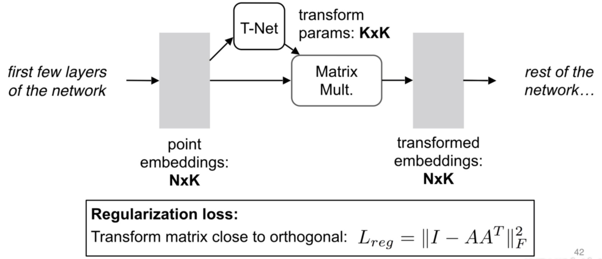
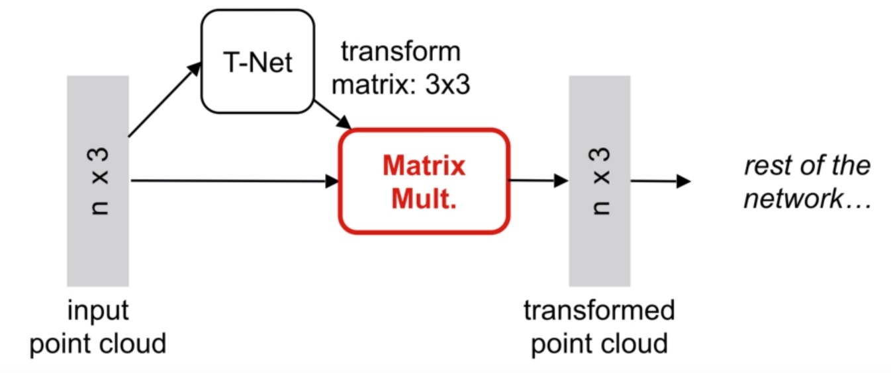

2. 从零开始部署个人博客 📒¶
2.1. Git¶
👉 下载戳我
下载完成后一路安装即可
重要
select components 根据是否需要gui来勾选 Git GUI Here
Choosing the default editor used by Git 选择默认Nano即可
安装完成后右键菜单就会出现Git GUI Here和Git Bash Here两个选项。
右键点击Git Bash Here会出现类似命令行的界面。

2.2. GitHub¶
👉 链接戳我
首先创建一个 GitHub账号
创建完成后，需要新建一个GitHub仓库（Repository）
输入仓库名称，选择Public， 勾选 Add a README file， 点击下面的Create repository
点击头像右边的三角，可以查看你创建好的仓库
2.2.1. 远程仓库¶
重要
以下命令行均使用Git Bash进行操作。
右键点击Git Bash Here
使用以下命令生成 SSH Key：
$ ssh-keygen -t rsa -C "youremail@example.com"
小技巧
后面的 your_email@youremail.com 改为在 Github 上注册的邮箱。
之后会要求确认路径和输入密码，使用默认的一路回车就行。
成功的话会在 C:Users你的用户名 下生成 .ssh 文件夹，进去，打开 id_rsa.pub，复制里面的全部内容。
小技巧
使用记事本打开id_rsa.pub
$ ssh-keygen -t rsa -C "test@youremail.com"
Generating public/private rsa key pair.
Enter file in which to save the key (/c/Users/Linzzz/.ssh/id_rsa):
Enter passphrase (empty for no passphrase): # 直接回车
Enter same passphrase again: # 直接回车
Your identification has been saved in /c/Users/Linzzz/.ssh/id_rsa.
Your public key has been saved in /c/Users/Linzzz/.ssh/id_rsa.pub.
The key fingerprint is:
SHA256:MDKVidPTDXIQoJwoqUmI4LBAsg5XByBlrOEzkxrwARI test@youremail.com
回到GitHub，进入 Account => Settings
点击左边的SSH and GPG keys，然后点击 New SSH key 按钮,title 设置标题，可以随便填，粘贴在电脑上生成的 key
添加成功后界面如下所示
为了验证是否成功，输入以下命令：
$ ssh -T git@github.com
然后输入yes，出现以下命令说明我们已成功连上 Github。
$ ssh -T git@github.com
The authenticity of host 'github.com (52.74.223.119)' can't be established.
RSA key fingerprint is SHA256:nThbg6kXUpJWGl7E1IGOCspRomTxdCARLviKw6E5SY8.
Are you sure you want to continue connecting (yes/no/[fingerprint])? yes # 输入 yes
Warning: Permanently added 'github.com,52.74.223.119' (RSA) to the list of known hosts.
Hi linzzz98! You've successfully authenticated, but GitHub does not provide shell access. # 成功信息
2.2.2. 本地仓库¶
2.2.2.1. 初次部署¶
在电脑需要同步到GitHub的工程，进入工程文件夹。
右键点击Git Bash Here，然后依次输入下面的代码
初始化
git init
小技巧
这时你会发现test里面多了个.git文件夹，它是Git用来跟踪和管理版本库的，因为它默认是隐藏文件，要是看不到就设置下文件夹和搜索选项。
添加文件
git add .
小技巧
注意. 和前面add 之间的空格，”.”代表这个test这个文件夹下的目录全部都提交。
也可以通过
git add 文件名
提交指定的文件，把文件添加到缓存区
提交文件到本地仓库
git commit -m "这里面写你的注释"
小技巧
引号里写提交后的注释
连接远程仓库和本地仓库
git remote add origin SSH
小技巧
这里的SSH是GitHub仓库中的 Clone with SSH 里的key
在GitHub的仓库里选择自己需要部署的项目，点击code==>SSH==>复制框里的信息。
替代上面代码的SSH
把本地库的所有内容推送到远程仓库
git push -u origin master
警告
由于新建的远程仓库是空的，所以要加上-u这个参数。
如果新建远程仓库不是空的，例如你勾选了 Initialize this repository with a README。那么你通过命令 $ git push -u origin master是会报错的，如下：
这是由于你新创建的那个仓库里面的README文件不在本地仓库目录中，这时需要先通过以下命令先将内容合并：
git pull --rebase origin master
然后再
git push origin master
2.2.2.2. 后续同步¶
等远程仓库里面有了内容之后，下次再从本地库上传内容的时候只需下面这样就可以了：
git add . git commit -m "更新备注" git push origin master


{kind=link}
{kind=link}
{kind=link}
{kind=link}
{kind=link}
{kind=link}
{kind=link}
{kind=link}
{kind=link}
{kind=link}
{kind=link}